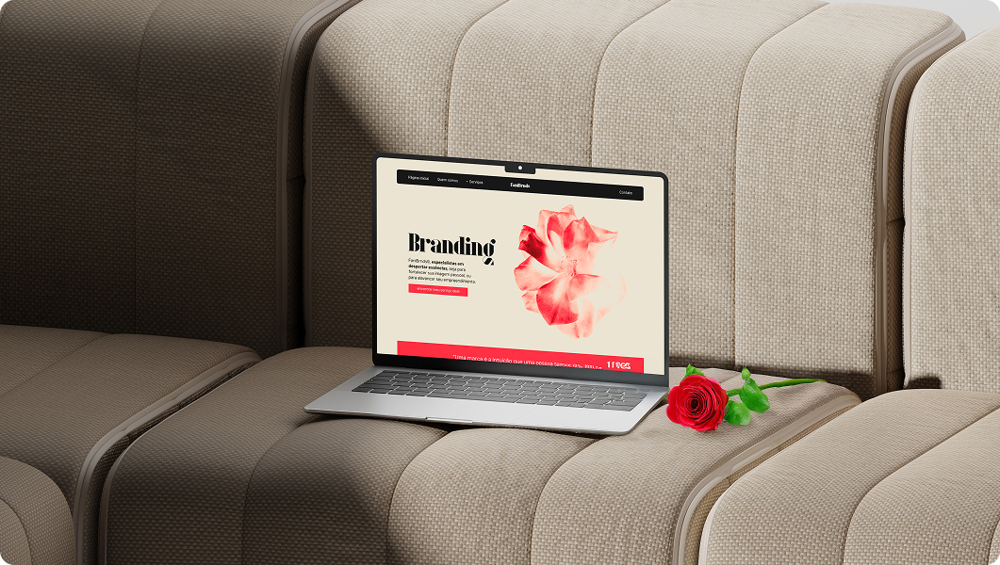
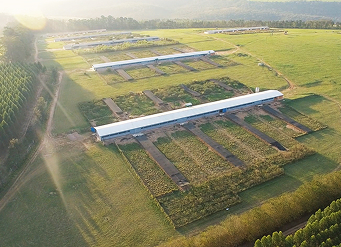
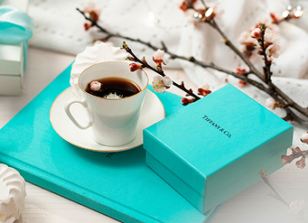
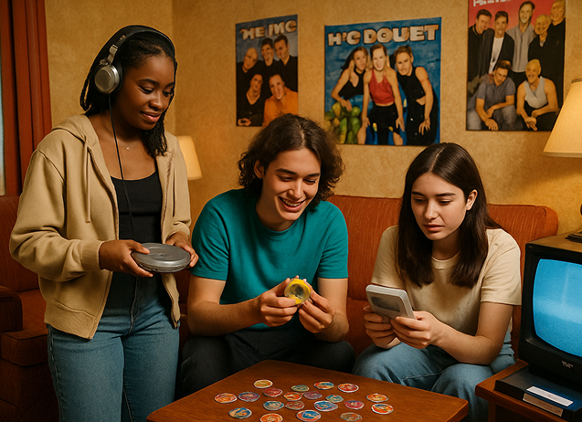
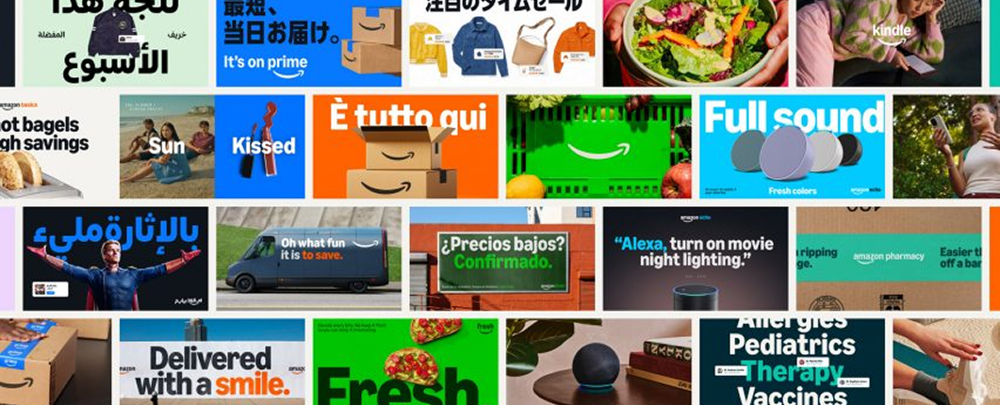
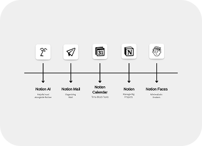

Quanto custa ter um site em 2026
Vale a pena ter um site em 2026? Vale. E, sendo bem honesto, vale mais hoje do que valia há alguns anos. Tem o motivo óbvio: praticamente todo mundo dá uma pesq
Notícias sobre o universo das marcas.
Branding · Marketing · Criatividade · Negócios · Design

Vale a pena ter um site em 2026? Vale. E, sendo bem honesto, vale mais hoje do que valia há alguns anos. Tem o motivo óbvio: praticamente todo mundo dá uma pesq

Você nunca precisou de um logo Uma das primeiras coisas que todo empresário faz ao abrir um negócio é correr atrás de um logo. Está errado. Não porque logo seja

Como o branding transformou ovos em ouro: O caso da aquisição da Mantiqueira pela JBS Imagine-se caminhando pela Quinta Avenida em Nova York, pela Avenue Montai

Da passarela para o paladar Imagine-se caminhando pela Quinta Avenida em Nova York, pela Avenue Montaigne em Paris ou pela Via Monte Napoleone em Milão. Entre a
Como Medir o ROI de Branding para Micro e Pequenas Empresas Para micro e pequenas empresas (MPEs), cada investimento precisa ser justificado. Quando se trata de

O Eterno Retorno do Design Em agosto de 2025, enquanto caminhava pelo campus de uma universidade americana, você poderia ser perdoado por pensar que havia entra

O sutil rebranding da Amazon: Transformação estratégica da comunicação visual Em 2025, a Amazon, uma das maiores empresas do mundo, revelou uma transformação vi

O universo Notion: Como a consistência visual está construindo um império digital. Imagine entrar em três restaurantes diferentes de uma mesma rede e, mesmo sem